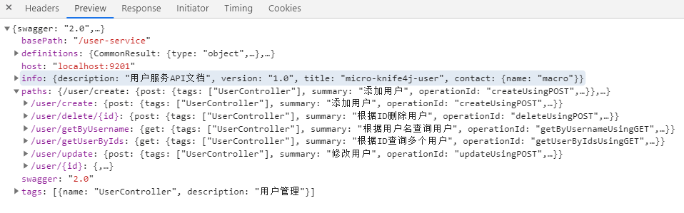
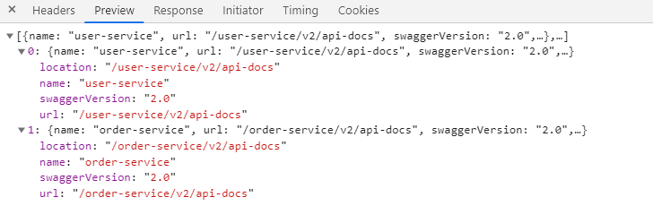
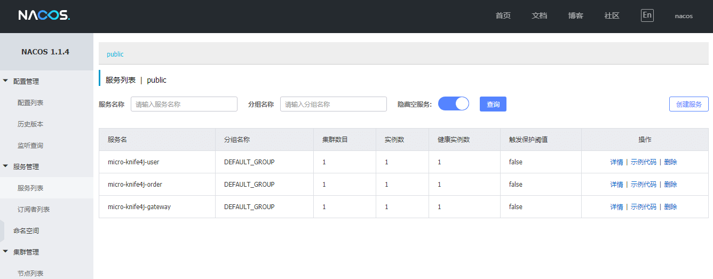
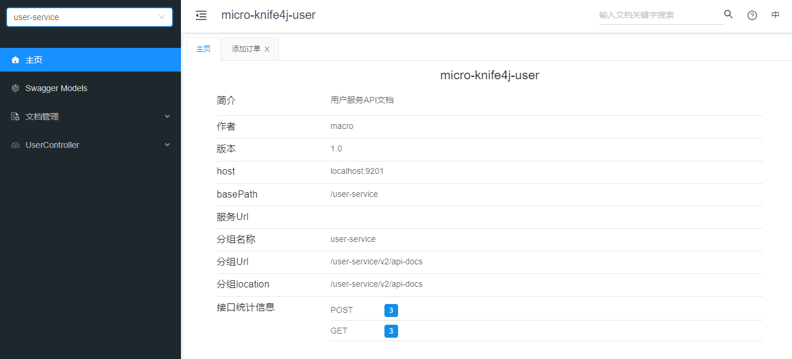
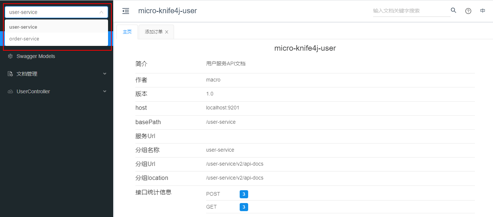
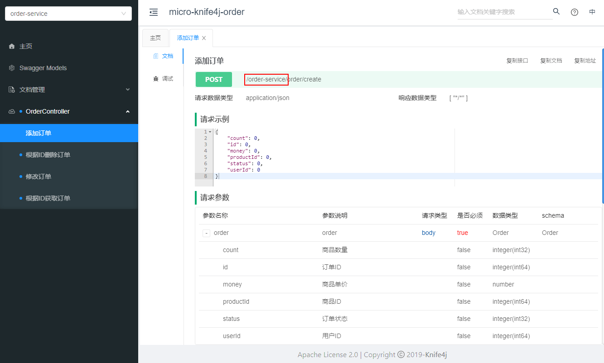
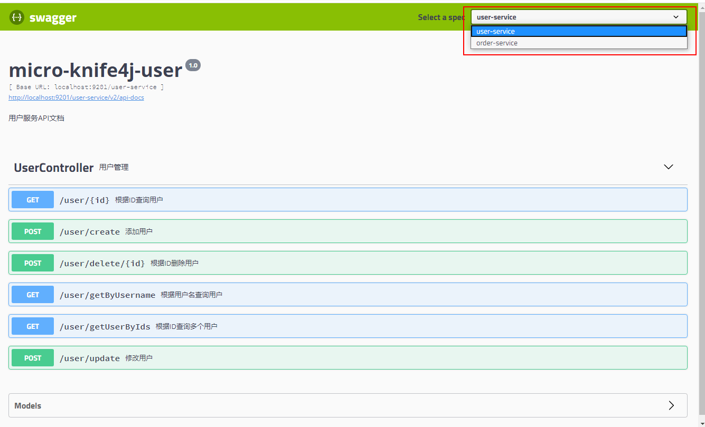

学习不走弯路，关注公众号 回复「学习路线」，获取mall项目专属学习路线！
微服务聚合Swagger文档，这波操作是真的香！
记得我的
mall-swarm微服务项目中，没有做API文档聚合，访问每个服务的API文档都需要访问单独的swagger-ui.html页面，既然我们使用了微服务，就应该有统一的API文档入口，最近发现knife4j有这方面的支持，本文将详细介绍其实现，希望对大家有所帮助！
前置知识
我们将采用Nacos作为注册中心，Gateway作为网关，使用
knife4j来生成API文档，对这些技术不了解的朋友可以看下下面的文章。
应用架构
我们理想的解决方案应该是这样的，网关作为API文档的统一入口，网关聚合所有微服务的文档，通过在网关进行切换来实现对其他服务API文档的访问。
相关服务划分：
- micro-knife4j-gateway：网关服务，作为微服务API文档的访问入口，聚合所有API文档，需要引入文档前端UI包；
- micro-knife4j-user：用户服务，普通API服务，不需要引入文档前端UI包；
- micro-knife4j-order：订单服务，普通API服务，不需要引入文档前端UI包。
具体实现
下面详细介绍下Spring Cloud Gateway + knife4j 聚合API文档的具体实现，依次搭建用户服务、订单服务和网关服务。
micro-knife4j-user
我们首先来搭建用户服务，一个普通的API服务，很简单，仅需三步即可集成knife4j。
- 在
pom.xml中添加相关依赖，一个SpringBoot的web功能依赖，knife4j的微服务依赖（不包含API文档的前端UI包）；
<dependencies>
<dependency>
<groupId>org.springframework.boot</groupId>
<artifactId>spring-boot-starter-web</artifactId>
</dependency>
<dependency>
<groupId>com.github.xiaoymin</groupId>
<artifactId>knife4j-micro-spring-boot-starter</artifactId>
</dependency>
</dependencies>
- 在
application.yml这添加相关配置，配置一下Nacos注册中心即可；
server:
port: 9501
spring:
profiles:
active: dev
application:
name: micro-knife4j-user
cloud:
nacos:
discovery:
server-addr: localhost:8848
management:
endpoints:
web:
exposure:
include: "*"
- 添加Swagger相关配置，非常常规的配置，添加
@EnableKnife4j注解开启knife4j的增强功能。
/**
* Swagger API相关配置
*/
@Configuration
@EnableSwagger2
@EnableKnife4j
public class Swagger2Config {
@Bean
public Docket createRestApi(){
return new Docket(DocumentationType.SWAGGER_2)
.apiInfo(apiInfo())
.select()
.apis(RequestHandlerSelectors.basePackage("com.macro.cloud.controller"))
.paths(PathSelectors.any())
.build();
}
private ApiInfo apiInfo() {
return new ApiInfoBuilder()
.title("micro-knife4j-user")
.description("用户服务API文档")
.contact("macro")
.version("1.0")
.build();
}
}
micro-knife4j-order
我们接下来搭建订单服务，一个普通的API服务，直接参考上面用户服务的搭建即可。
micro-knife4j-gateway
最后我们搭建网关服务，作为微服务API文档的的统一入口，聚合所有微服务的API文档。
- 在
pom.xml中添加相关依赖，Gateway相关依赖和knife4j的Starter（包含API文档的前端UI包）；
<dependencies>
<dependency>
<groupId>org.springframework.cloud</groupId>
<artifactId>spring-cloud-starter-gateway</artifactId>
</dependency>
<dependency>
<groupId>com.github.xiaoymin</groupId>
<artifactId>knife4j-spring-boot-starter</artifactId>
</dependency>
</dependencies>
- 在
application.yml这添加相关配置，配置一下Nacos注册中心，用户服务和订单服务的路由即可；
server:
port: 9201
spring:
profiles:
active: dev
application:
name: micro-knife4j-gateway
cloud:
nacos:
discovery:
server-addr: localhost:8848
gateway:
routes: #配置路由路径
- id: user-service
uri: lb://micro-knife4j-user
predicates:
- Path=/user-service/**
filters:
- StripPrefix=1
- id: order-service
uri: lb://micro-knife4j-order
predicates:
- Path=/order-service/**
filters:
- StripPrefix=1
discovery:
locator:
enabled: true #开启从注册中心动态创建路由的功能
lower-case-service-id: true #使用小写服务名，默认是大写
- 在网关上添加Swagger资源配置，用于聚合其他微服务中Swagger的
api-docs访问路径；
/**
* Swagger资源配置
* Created by macro on 2020/7/9.
*/
@Slf4j
@Component
@Primary
@AllArgsConstructor
public class SwaggerResourceConfig implements SwaggerResourcesProvider {
private final RouteLocator routeLocator;
private final GatewayProperties gatewayProperties;
@Override
public List<SwaggerResource> get() {
List<SwaggerResource> resources = new ArrayList<>();
List<String> routes = new ArrayList<>();
//获取所有路由的ID
routeLocator.getRoutes().subscribe(route -> routes.add(route.getId()));
//过滤出配置文件中定义的路由->过滤出Path Route Predicate->根据路径拼接成api-docs路径->生成SwaggerResource
gatewayProperties.getRoutes().stream().filter(routeDefinition -> routes.contains(routeDefinition.getId())).forEach(route -> {
route.getPredicates().stream()
.filter(predicateDefinition -> ("Path").equalsIgnoreCase(predicateDefinition.getName()))
.forEach(predicateDefinition -> resources.add(swaggerResource(route.getId(),
predicateDefinition.getArgs().get(NameUtils.GENERATED_NAME_PREFIX + "0")
.replace("**", "v2/api-docs"))));
});
return resources;
}
private SwaggerResource swaggerResource(String name, String location) {
log.info("name:{},location:{}", name, location);
SwaggerResource swaggerResource = new SwaggerResource();
swaggerResource.setName(name);
swaggerResource.setLocation(location);
swaggerResource.setSwaggerVersion("2.0");
return swaggerResource;
}
}
- 什么是Swagger的
api-docs访问路径？该路径会返回JSON格式数据，Swagger渲染API文档页面的所有数据就是来源于此，比如我们的用户服务会返回如下信息，访问地址：http://localhost:9201/user-service/v2/api-docs

- 接下来我们需要自定义Swagger各个配置的节点，简单来说就是自定义Swagger内部的各个获取数据的接口；
/**
* 自定义Swagger的各个配置节点
* Created by macro on 2020/7/9.
*/
@RestController
public class SwaggerHandler {
@Autowired(required = false)
private SecurityConfiguration securityConfiguration;
@Autowired(required = false)
private UiConfiguration uiConfiguration;
private final SwaggerResourcesProvider swaggerResources;
@Autowired
public SwaggerHandler(SwaggerResourcesProvider swaggerResources) {
this.swaggerResources = swaggerResources;
}
/**
* Swagger安全配置，支持oauth和apiKey设置
*/
@GetMapping("/swagger-resources/configuration/security")
public Mono<ResponseEntity<SecurityConfiguration>> securityConfiguration() {
return Mono.just(new ResponseEntity<>(
Optional.ofNullable(securityConfiguration).orElse(SecurityConfigurationBuilder.builder().build()), HttpStatus.OK));
}
/**
* Swagger UI配置
*/
@GetMapping("/swagger-resources/configuration/ui")
public Mono<ResponseEntity<UiConfiguration>> uiConfiguration() {
return Mono.just(new ResponseEntity<>(
Optional.ofNullable(uiConfiguration).orElse(UiConfigurationBuilder.builder().build()), HttpStatus.OK));
}
/**
* Swagger资源配置，微服务中这各个服务的api-docs信息
*/
@GetMapping("/swagger-resources")
public Mono<ResponseEntity> swaggerResources() {
return Mono.just((new ResponseEntity<>(swaggerResources.get(), HttpStatus.OK)));
}
}
- 比如说
swagger-resources这个接口，可用于获取所有微服务的api-docs访问路径，获取信息如下，访问地址：http://localhost:9201/swagger-resources

功能演示
接下来我们来演示下微服务API文档聚合的功能，仅需要访问网关的API文档页面即可，可自行切换到相关服务的API文档。
- 在此之前先启动我们的Nacos注册中心，然后依次启动
micro-knife4j-user、micro-knife4j-order及micro-knife4j-gateway服务；

- 从网关访问API文档，访问地址：http://localhost:9201/doc.html

- 我们通过左上角的切换组件即可切换到对应服务的API文档；

- 查看API文档，我们可以发现所有接口都已经添加了对应的访问前缀，可以正常访问。

切换回Swagger UI
如果你不想使用knife4j的界面，想用原来的Swagger界面，也是可以支持的，切换方法非常简单，下面我们来讲讲。
- 首先我们需要在
pom.xml中去除knife4j的相关依赖，主要就是下面两个依赖；
<dependencies>
<dependency>
<groupId>com.github.xiaoymin</groupId>
<artifactId>knife4j-micro-spring-boot-starter</artifactId>
</dependency>
<dependency>
<groupId>com.github.xiaoymin</groupId>
<artifactId>knife4j-spring-boot-starter</artifactId>
</dependency>
</dependencies>
- 在
pom.xml中添加Swagger相关依赖，并去除原来使用的@EnableKnife4j注解；
<dependencies>
<dependency>
<groupId>io.springfox</groupId>
<artifactId>springfox-swagger2</artifactId>
<version>2.9.2</version>
</dependency>
<dependency>
<groupId>io.springfox</groupId>
<artifactId>springfox-swagger-ui</artifactId>
<version>2.9.2</version>
</dependency>
<dependency>
<groupId>io.swagger</groupId>
<artifactId>swagger-models</artifactId>
<version>1.6.0</version>
</dependency>
<dependency>
<groupId>io.swagger</groupId>
<artifactId>swagger-annotations</artifactId>
<version>1.6.0</version>
</dependency>
</dependencies>
- 重新启动所有服务，访问网关的API文档路径即可查看：http://localhost:9201/swagger-ui.html

总结
对比knife4j和原生Swagger的微服务使用，再次证明knife4j是springfox-swagger的增强UI实现，完全遵循了springfox-swagger中的使用方式。
参考资料
官方文档：https://doc.xiaominfo.com/guide/ui-front-gateway.html
项目源码地址
https://github.com/macrozheng/springcloud-learning/tree/master/micro-knife4j
公众号